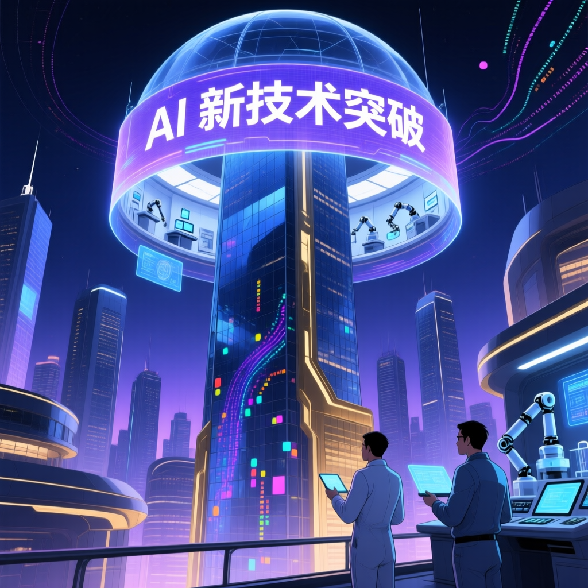

本文報導來自 TECHBANG，發布於 2026-04-16。最新科技新聞報道指出，人工智能領域迎來重要技術突破，研究人員表示，新技術將對產業發展產生深遠影響。

「同樣的 AI 工具，為什麼有人覺得它是世紀大騙局，有人卻願意每月掏 200 美元？」
— 來自各大地區 AI 用戶的真實心聲，2026 年 4 月覺得 AI 沒用的用戶，往往用它來替代搜尋引擎查簡單事實，卻發現 AI 會「幻覺」出錯誤資訊。而付費用戶則懂得用 AI 做複雜推理、編程、寫作。
免費用戶常用模糊指令，如「幫我寫一封信」。付費用戶懂得提供背景、格式、語氣，結果自然天差地別。
免費版 AI 回應緩慢、頻率受限，用戶體驗大打折扣。付費用戶享有優先通道，回應速度快上 5-10 倍。
付費訂閱通常解鎖更強大的模型，如 GPT-4、Claude 3 Opus，這些模型在推理、創意、專業知識上遠超免費版本。
願意付費的用戶往往已將 AI 整合進日常工作流程：代碼生成、文件起草、數據分析、客戶回覆等，節省大量時間。
對於專業人士，每月 $200 美元訂閱費可能等於節省了 10-20 小時的無聊工作，投資回報率驚人。
覺得 AI 是騙局的人，往往期望它「完全正確、什麼都會」。理性用戶則知道 AI 是強大的助手，但不是完美的替代品。
非英語用戶反映 AI 對中文、成語、文化背景的理解時有偏差，導致輸出品質不穩定，降低使用意願。
部分用戶因擔心資料被用於訓練而不願輸入敏感內容，令 AI 效果大打折扣。企業版付費方案則提供更好的資料安全保障。
付費用戶可優先試用新功能，如 OpenAI 的 Sora 影片生成、GPT-4o 語音模式、Anthropic 的 Computer Use 等。
付費 AI 模型在醫療、法律、金融等專業領域的知識深度，遠超一般搜尋引擎，是專業人士做 research 的利器。
付費用戶更願意花時間訓練 AI 理解自己的風格與偏好，長期使用下來，AI 與用戶的協作效率越來越高。
| 功能 | 免費方案 | 每月 $20（Plus） | 每月 $200（Pro） |
|---|---|---|---|
| 基礎模型 | GPT-4o mini / Claude Haiku | GPT-4o / Claude Sonnet | GPT-4o + o1/o3 + 深度推理 |
| 每日使用限額 | 極度限制 | 80-100 条消息/3小時 | 幾乎無限制 |
| 回應速度 | 慢（高峰期排隊） | 正常 | 優先快速通道 |
| 新功能搶先體驗 | ❌ 無 | 較晚 | ✅ 優先 |
| Advanced Data Analysis | ❌ | ✅ | ✅ 增強版 |
| DALL·E 圖片生成 | 有限額 | 正常 | 更高品質 + 創意版 |
| 語音對話模式 | ❌ 或極簡 | ✅ | ✅ 進階版 |
| 用戶類型 | 主要使用方式 | 時間節省 | 替代工具 |
|---|---|---|---|
| 軟體工程師 | 代碼生成、Debug、重構建議 | 每週 10-15 小時 | Stack Overflow、GitHub Copilot |
| 內容創作者 | 文章撰寫、標題建議、社群文案 | 每週 8-12 小時 | Grammarly、Jasper |
| 行銷人員 | 廣告文案、SEO 關鍵字、競品分析 | 每週 6-10 小時 | SEMrush、Ahrefs |
| 學生研究者 | 文獻整理、論文框架、數據解讀 | 每週 5-8 小時 | Google Scholar、EndNote |
| 中小企老闆 | 客戶回覆、合同草擬、財務解讀 | 每週 8-15 小時 | 助理、外包法律顧問 |
如果你不確定自己是否需要付費 AI，先問自己三個問題：我會用 AI 來做什麼？我每週能用幾次？我的時間值多少錢？答案清晰後再決定。
AI 工具的好壞，很大程度上取決於使用者的「提示詞素養」和工作整合能力。未來，AI 訂閱可能走向分層：基礎功能免費、專業功能月費$20、深度推理旗艦版$200。你願意站在哪一層？
AI 不是魔法，但它是強大的放大器。願意學習、願意整合的人，月付 $200 換來的是 10 倍生產力；只想「一鍵得到答案」的人，會繼續覺得 AI 是騙子。付費與否，取決於你願意投入多少心力。